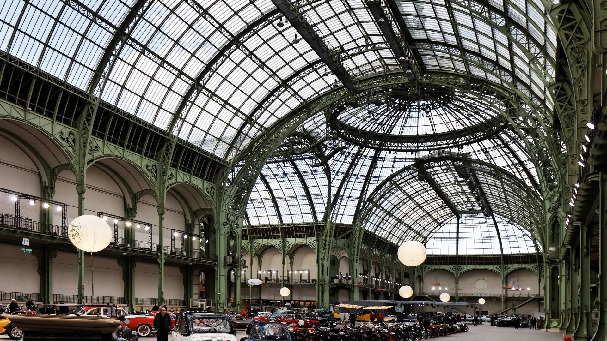

{kind=link}

BnF Richelieu
1868년 앙리 라브루스트가 주철 기둥과 9개 도자기 돔으로 완성한 19세기 건축의 걸작 '라브루스트 열람실'과 일반에 전면 무료 개방된 거대한 타원형 '오발 열람실(Salle Ovale)', 프랑스 국립도서관 박물관.

샹젤리제(Champs-Élysées) 대로와 센 강 사이에 우뚝 솟은 1900년 파리 만국박람회(Exposition Universelle)의 가장 위대한 건축 유산이자 프랑스 국립 전시장이다.
에펠탑에 쓰인 것보다 많은 6,000톤의 철골과 8,500톤의 석재, 15,000㎡에 달하는 거대한 유리 지붕으로 지어진 '그랑 팔레 네이브(La Nef)'는 유럽에서 가장 큰 철골 유리 돔 홀로, 높이가 45m에 달한다.
샤넬 패션쇼와 아트 바젤(Art Basel Paris), 2024 파리 올림픽 펜싱/태권도 경기장으로 전 세계의 찬사를 받았으며, 3년간의 전면 복원 공사를 거쳐 세계 최고 수준의 블록버스터급 대형 미술 기획전과 문화 행사를 여는 파리의 대표 예술 랜드마크로 재탄생했다.
"압도적인 자연 채광이 쏟아지는 45m 철골 유리 천장 아래 서는 것만으로도 19세기 벨 에포크 시대의 영광을 온몸으로 체감할 수 있는 공간이다." 샹젤리제나 알렉상드르 3세 다리를 건너며 외관을 감상하고, 국립 갤러리의 대형 기획전시를 관람하는 90~120분 코스로 적합하다.
| 운영시간 | 화–일 09:30–20:00 · 금요일 야간 22:30까지 |
|---|---|
| 휴무 | 월요일 휴관 (12/25·5/1·7/14 휴관) |
| 예약 | 온라인 사전 예약 강력 권장 — 현장 구매는 잔여분 보장 없음 |
| 소요시간 | 120분 재확인 |
| 메모 | Cezanne et nous 2026/9/23–2027/1/17 갤러리 3·4 · 174점(세잔 69 + 타 작가 105) · 예약 2026-07-07 개시 |
| 항목 | 상세 정보 |
|---|---|
| 위치 | 3 Avenue du Général Eisenhower, 75008 Paris |
| 운영 시간 | 수요일–월요일 10:00–20:00 (금요일 야간 22:00까지 연장 개방) / 매주 화요일 휴관 |
| 입장료 | 기획전시에 따라 성인 €14.00~€18.00 (사전 온라인 예매 필수) |
| 사전 온라인 예매 (필수) | 공식 웹사이트(grandpalais.fr)에서 입장 시간 슬롯 사전 예매 필수 |
| 교통 접근 | 메트로 1/13호선 Champs-Élysées - Clemenceau역 도보 1분, 메트로 1/9호선 Franklin D. Roosevelt역 도보 3분 |
| 연계 도보 | Pont Alexandre III (알렉상드르 3세 다리) 남쪽 도보 2분 거리 |
1868년 앙리 라브루스트가 주철 기둥과 9개 도자기 돔으로 완성한 19세기 건축의 걸작 '라브루스트 열람실'과 일반에 전면 무료 개방된 거대한 타원형 '오발 열람실(Salle Ovale)', 프랑스 국립도서관 박물관.

18세기 원형 곡물거래소를 세계적인 건축가 안도 다다오가 노출 콘크리트 원통 실린더로 리노베이션한 현대미술관. 프랑수아 피노 회장의 세계적 현대미술 컬렉션과 1889년 돔 천장 무역 파노라마 프레스코화.

렌조 피아노와 리처드 로저스가 건물 배관과 골격을 외벽으로 노출시킨 20세기 하이테크 건축의 전설이자 유럽 최대 근현대미술관. ⚠ 2025년 가을부터 2030년까지 전면 개보수 공사로 본관 폐관 중.

클로드 모네가 43년간 직접 꽃과 연못을 가꾸며 불후의 『수련』 대작을 창조해낸 살아있는 인상파 캔버스. 초록색 일본식 다리가 걸린 '물의 정원(Jardin d'eau)'과 핑크빛 모네 생가 아틀리에.

중세 소르본 대학 교수와 학생들이 공용어로 라틴어를 쓰던 데서 유래한 800년 파리 지성의 요람이자 센 강 좌안(Rive Gauche)의 심장. 프랑스 위인들의 성소 팡테옹(Panthéon), 셰익스피어 앤 컴퍼니, 뤽상부르 공원.

17세기 귀족 저택(Hôtel particulier), 파리에서 가장 오래된 대칭 광장 보주 광장(Place des Vosges), 유대인 전통 미식 로지에 거리, 북마레의 감각적인 독립 부티크와 갤러리가 공존하는 역사·트렌드 지구.